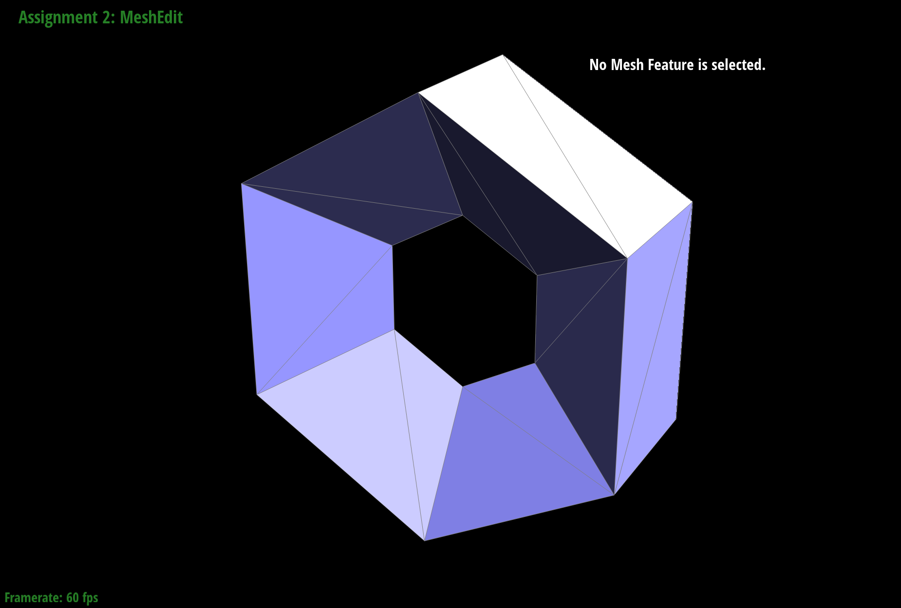

Overview
In this project we work with Bezier curves/surfaces and triangle meshes, learning how we can approximate different objects using these methods. In the first section, we implement Casteljau's algorithm to approximate a curve or curved surface based on a given set of control points. In the second part we implement Phong shading as well as manipulating a triangle mesh by flipping, splitting, and upsampling the triangles. Overall, the most interesting things for me were understanding how half-edges can be used to simplify operations like flipping or splitting (mostly just changing pointers) and seeing how we can upsample by simply combining flipping and splitting triangles in a specific way.
Part 1
Casteljau's algorithm involves linearly interpolating between the points to get intermediate points repeatedly until we get one point on the Bezier curve. We then repeat with t from 0 to 1 to get the full curve. In my implementation I simply interpolate between consecutive points to get n-1 points and return the resulting array.
images in order: step 1, step 2, step 3, step 4, step 5, slightly different curve


Part 2
The surface algorithm is very similar to the version for curves. We essentially generate a set of intermediate points (one along each row of our grid of control points) by using the same process as the curve algorithm. We can then apply the curve algorithm to this column of intermediate points to get our final point. The rows are parameterized by u and columns by v instead of the single parameter t from the curve algorithm.
My implementation for evaluateStep was the same as for the curve (interpolate consecutive points). evaluate1D was just repeating evaluateStep until there was a single point. The evaluate function first generates the intermediate points for each row using evaluate1D, then calls evaluate1D one final time on this column of points.

Part 3
I computed the area-weighted normals for each face by first getting the vertex position for the current halfedge, for the next halfedge, and for the next next halfedge. This gives me all 3 vertex positions for the current face. I can then take the cross product of the p2 - p1 and p3 - p1 vectors to get the area-weighted normal for the current face. Then, I looped over all the faces (similarly to printNeighbourPositions) and summed the normals for each face. Lastly, I normalized this vector for the final result.

Part 4
I drew out two diagrams for before and after the flip and labeled the vertices (a, b, c, d), edges (e1-e5), half-edges (h1-h6), and faces (f1, f2). I used these diagrams to figure out all the pointer changes (which half-edge each vertex/edge/face should point to and all the pointers for half-edges). I was then able to just make these pointer changes in the code. There were no interesting tricks I used because this function worked immediately. There was no debugging necessary.
Part 5
Similarly to part 4, I drew out two diagrams for before and after the split and labeled the vertices (a-d, m), edges (e1-e8), half-edges (h1-h12), and faces (f1-f4). I used these diagrams to figure out how many of each element I needed to create and to figure out what all the pointer values should be. In my code, I then simply created the new elements and assigned all the pointers. I got the midpoint by averaging the positions of the two vertices adjacent to the edge. There were no interesting tricks I used because this function worked immediately. There was no debugging necessary.
images in order: before splits, after splits, before splits and flips, after splits and flips
Part 6
I followed the suggested implementation steps. I first set newPosition for all original vertices and for all new vertices (initially set on the edges) using loops and applying the formulas. I then loop through all original edges and split them. Because the returned vertex's halfedge from splitEdge is along the new edge, we can go around the 4 incident edges and label 2 of them as new and 2 of them as old. A trick I used here to only go over the old edges is to count how many original edges there are and only loop that many times. Because new edges are added at the end of the list, we won't loop infinitely by trying to split new edges. We can then flip all new edges connecting a new and old vertex using a loop. Finally, we update all positions according to newPosition.
Loop subdivision rounds sharp corners and edges. As we can see in the images below, even after subdividing only once the torus and cube become somewhat rounded and after many iterations the edges go away almost entirely. I was also able to reduce this by pre-splitting an edge. After pre-splitting the same edge multiple times on a cube it was noticeable sharper compared to other edges which were rounded.
images in order: cube original, cube upsampled 1 time, cube upsampled 4 times, torus original, torus upsampled 1 time, torus upsampled 4 times


The cube becomes asymmetric because the triangles for each face are not symmetric (there is a single diagonal that runs from top right to bottom left or from top left to bottom right). To alleviate this, I split all these diagonals so each face has 4 triangles. This made it so all faces are symmetric.
website link: https://cal-cs184-student.github.io/sp22-project-webpages-huangshawn1/